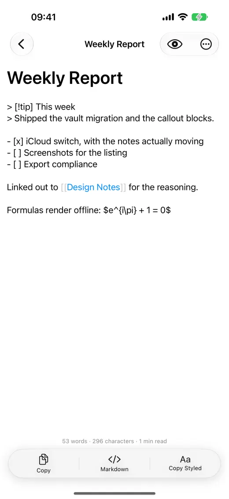

Markdown writing · iPhone
Inkstone Notes keeps your Markdown notes as files
Every note is an ordinary .md file in iCloud Drive, so you can open the same folder on a Mac or in another editor. Inkstone adds a focused native writing surface without locking your notes in a database.
Real product screen
Inside the app

File ownership
Your notes remain plain Markdown
A folder of .md files is the source of truth. Open it from Finder on a Mac, edit with another app or move it without a proprietary export step.
Use [[note title]] links, backlinks and rename-aware links to navigate a growing collection.
Syntax highlighting, live preview, outlines, inline tags, daily notes and full-text search stay close to the editor.
Copy with one of eight typesetting styles or export PDF and HTML with embedded images.
Offline rendering
Formulas and diagrams without a web service
KaTeX and Mermaid are bundled for local rendering. The App Store privacy label says the developer does not collect data from this app.
Inkstone is an iPhone app requiring iOS 18.0 or later; the interface is available in English and Simplified Chinese.
The US App Store listed a $0.99 upfront price when checked on 23 September 2026; regional prices may differ.
Common questions
Before you download
Are Inkstone notes locked in its own database?
No. Notes are ordinary Markdown files in an iCloud Drive folder that can be opened or edited by other tools.
Can I use Inkstone's editor on a Mac?
The current App Store listing is for iPhone. You can access the same Markdown files on a Mac through iCloud Drive and edit them with another app.